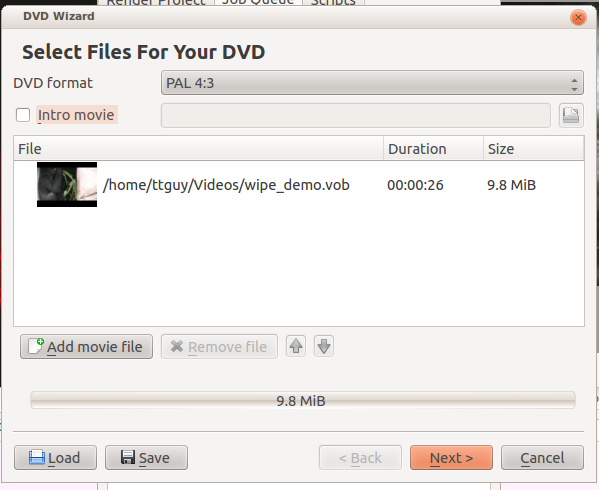
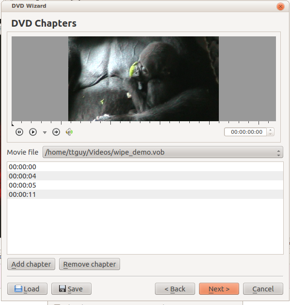
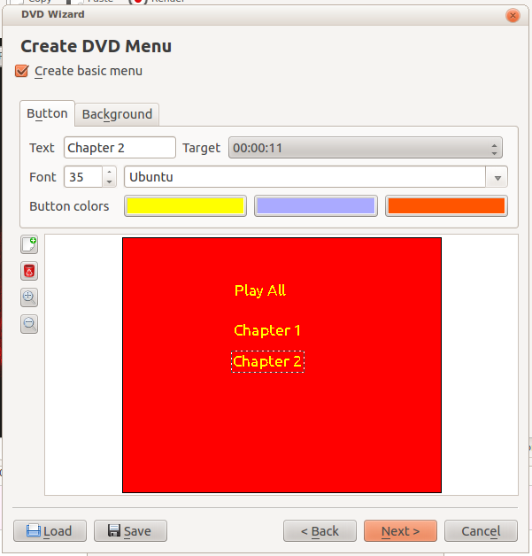
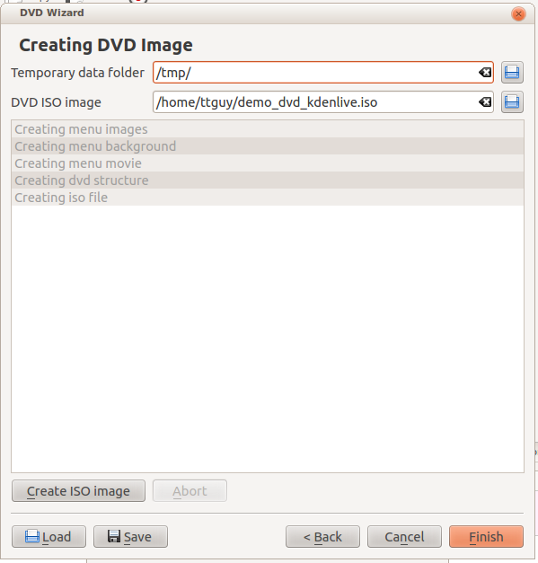
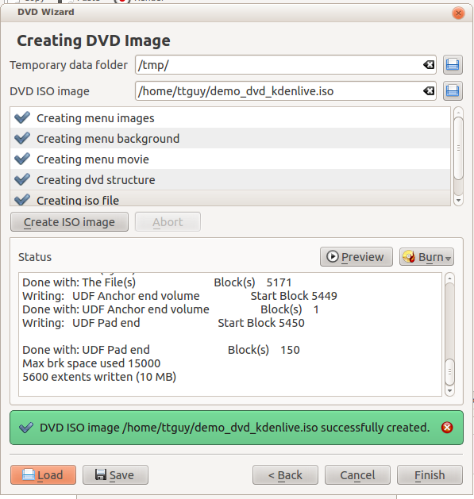

DVD Wizard¶
Contents
Note
Removed since Version 21.08
With the move to MLT7 the DVD Wizard was removed as it was unmaintained since long.
This feature allows you to author a DVD with a simple menu. Nothing flashy.
Screen 1 of the DVD Wizard¶
Select a file here that you have rendered using one of the render.
Screen 2 of the DVD Wizard¶
First click on the 00:00:00 in the center to select a file to play. Then play the file in the preview window and add chapters at the cursor’s time point by clicking the button.
Screen 3 of the DVD Wizard¶
The first two buttons on the side allow you to add and delete menu buttons. You define what the button does using the Target drop down list.
Screen 4 of the DVD Wizard¶
Click the button on this screen to author your DVD. Click only after you have clicked button. Clicking closes the DVD wizard without prompting for you to complete the job.
Result of successful DVD creation
Resulting iso-file can then be written into writable DVD-disk using programs like K3b. File can also be viewed with most video player applications like Kaffeine, Vlc or Smplayer (Disk menu might have issues to play correctly).